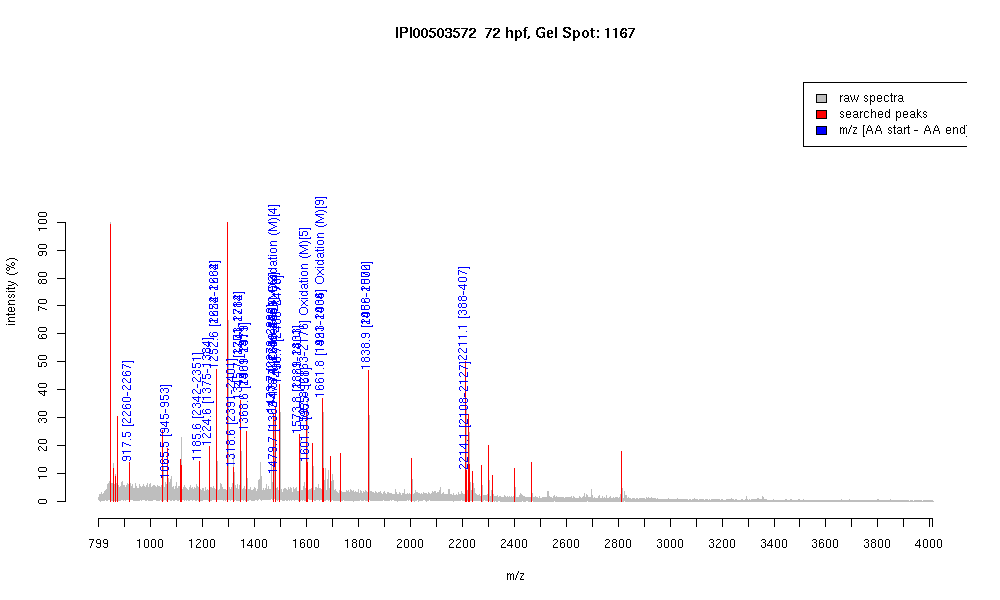

| Name | "PREDICTED: myosin, heavy polypeptide1, skeletal muscle" |
|---|---|
| MW | 287431.3 |
| PI | 5.56 |
| Mascot Protein Score | 104 |
| Masses (matched / unmatched) | 19 / 33 |

| Peptide | MZ (calc) | MZ (observed) | Error (DA) | Error (PPM) | Start | Stop | Modifications |
|---|---|---|---|---|---|---|---|
| AALEQTER | 917.4686 | 917.4893 | 0.0207 | 23 | 2260 | 2267 | |
| LEDECSELK | 1065.4768 | 1065.4919 | 0.0151 | 14 | 945 | 953 | |
| EQDTSAHLER | 1185.5494 | 1185.5992 | 0.0498 | 42 | 2342 | 2351 | |
| TKYETDAIQR | 1224.6219 | 1224.616 | -0.0059 | -5 | 1375 | 1384 | |
| DAQLHLDDAVR | 1252.6281 | 1252.6115 | -0.0166 | -13 | 1654 | 1664 | |
| DAQLHLDDAVR | 1252.6281 | 1252.6115 | -0.0166 | -13 | 2222 | 2232 | |
| ELESEVEAEQR | 1318.6121 | 1318.6019 | -0.0102 | -8 | 2391 | 2401 | |
| VAEQELVDASER | 1345.6594 | 1345.6543 | -0.0051 | -4 | 1703 | 1714 | |
| VAEQELVDASER | 1345.6594 | 1345.6543 | -0.0051 | -4 | 2271 | 2282 | |
| VQHELEEAEER | 1368.639 | 1368.626 | -0.013 | -9 | 1901 | 1911 | |
| VQHELEEAEER | 1368.639 | 1368.626 | -0.013 | -9 | 2469 | 2479 | |
| KVAEQELVDASER | 1473.7543 | 1473.7468 | -0.0075 | -5 | 2270 | 2282 | |
| NTLMQSEIEELR | 1478.7156 | 1478.6912 | -0.0244 | -17 | 1680 | 1691 | Oxidation (M)[4] |
| NTLMQSEIEELR | 1478.7156 | 1478.6912 | -0.0244 | -17 | 2248 | 2259 | Oxidation (M)[4] |
| GMSKANSEVAQWR | 1479.7008 | 1479.689 | -0.0118 | -8 | 1362 | 1374 | Oxidation (M)[2] |
| KVQHELEEAEER | 1496.7339 | 1496.7111 | -0.0228 | -15 | 2468 | 2479 | |
| VRELESEVEAEQR | 1573.7816 | 1573.7626 | -0.019 | -12 | 1821 | 1833 | |
| VRELESEVEAEQR | 1573.7816 | 1573.7626 | -0.019 | -12 | 2389 | 2401 | |
| ITDSMQSTLDSEVR | 1597.7374 | 1597.7689 | 0.0315 | 20 | 2163 | 2176 | Oxidation (M)[5] |
| DIDDLELTLAKVEK | 1601.8633 | 1601.8247 | -0.0386 | -24 | 955 | 968 | |
| LQGEVEDLMIDVER | 1661.8051 | 1661.7812 | -0.0239 | -14 | 1423 | 1436 | Oxidation (M)[9] |
| LQGEVEDLMIDVER | 1661.8051 | 1661.7812 | -0.0239 | -14 | 1991 | 2004 | Oxidation (M)[9] |
| NSYEETLDQLETLKR | 1838.9131 | 1838.8998 | -0.0133 | -7 | 1488 | 1502 | |
| NSYEETLDQLETLKR | 1838.9131 | 1838.8998 | -0.0133 | -7 | 2056 | 2070 | |
| IGYLLGLNSADMLKALCYPR | 2211.1665 | 2211.1021 | -0.0644 | -29 | 388 | 407 | |
| AEIQTALEEAEGTLEHEESK | 2214.0408 | 2214.0774 | 0.0366 | 17 | 2108 | 2127 |